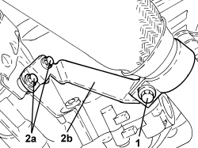
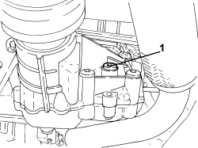
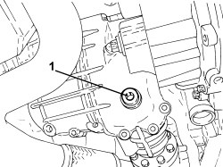
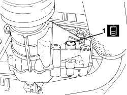
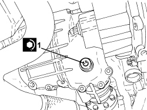

0010T51 GEAR DRIVE IDLER UNIT OIL - REPLACE
- Path
- Procedures > 00 MAINTENANCE > 0010 NEW VEHICLES AND MAINTENANCE > 0010T VEHICLE FLUIDS > 0010T51 GEAR DRIVE IDLER UNIT OIL - REPLACE
- Kind
- repair procedure (removal / refitting; the operation number is the code)
- Applies to
- engines: 3.2 JTS; all production periods
- Interactive page
- https://sloeber94.github.io/elrnDB-aBrrSpdr/en/#/946003985
Applies to: engines: 3.2 JTS; all production periods
Op. 7055B54 UNDER ENGINE PROTECTION/GUARD - R.R.
1. Undo the bolt fixing the exhaust pipe mounting collar.
2. Undo bolts (2a) and remove exhaust pipe mount (2b).

Applies to: engines: 3.2 JTS; all production periods
1. Undo the rear driver idler casing oil filler plug.

Applies to: engines: 3.2 JTS; all production periods
1. Undo the drain plug and collect the fluid from the rear drive idler casing in a suitable container.

Applies to: engines: 3.2 JTS; all production periods
- Tighten the oil drain plug to the recommended torque.
Component | Fastening | dia | Value (daNm) | Validity |
|---|---|---|---|---|
Rear drive idler casing fluid drain plug | - | M16 | 2.5 | 3.2 JTS 2.4 JTD 20V 4x4 |
1. Add fluid in the specified quantity through the filler opening.
Component | Type | Description | Classification | Qty. | Validity |
|---|---|---|---|---|---|
IDLER UNIT (PTU) | Oil [l] | TUTELA CAR MULTI AXLE | SAE 75W-85 - API GL-5 | 0.60 | 3.2 JTS 2.4 JTD 20V 4x4 |

Applies to: engines: 3.2 JTS; all production periods
1. Tighten the filler cap to the recommended torque.
Component | Fastening | dia | Value (daNm) | Validity |
|---|---|---|---|---|
Rear drive idler casing fluid supply plug | - | M16 | 2.5 | 3.2 JTS 2.4 JTD 20V |

Applies to: engines: 3.2 JTS; all production periods
- Place the exhaust pipe mount in its housing and secure it using the bolts.
- Tighten the bolt fixing the exhaust pipe mounting collar.